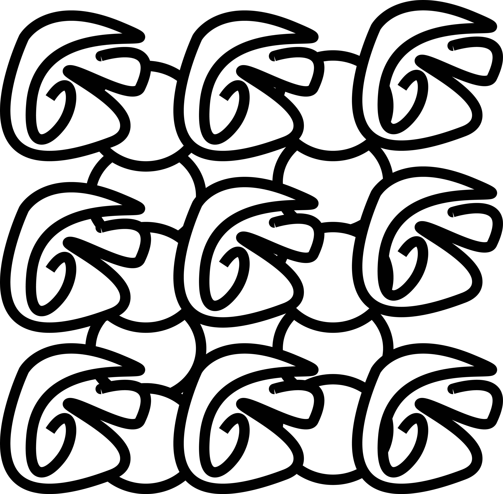

Double Death Punch
This label design was my very first project created in Adobe Illustrator on my laptop. I built a full branding concept for a fictional extreme sports drink, using bold colors, sharp contrast, and high‑energy illustrations to match the over‑the‑top personality of the product. The fists, watermelon graphics, and explosive background shapes were all drawn and layered to create a sense of motion and impact across the entire label.
Because this was my first Illustrator project, I spent a lot of time learning how to use shape tools, layering, gradients, and typography to balance the artwork with the nutrition panel and product information. It pushed me to understand layout hierarchy, spacing, and how to combine illustration with clean packaging design. This project became a fun introduction to Illustrator and a big step in building my digital design skills.
Tessellation Pattern Illustration (Adobe Illustrator + Apple Pencil)

This piece is a hand‑drawn tessellation created in Adobe Illustrator using my Apple Pencil. The design is built from a single abstract shape that repeats seamlessly across the page, forming an interlocking black and white pattern. I focused on bold outlines, symmetry, and rhythm to create a continuous visual flow where each shape connects cleanly to the next.
The challenge in this project was refining the curves and alignment so the pattern loops without gaps or overlaps. Working through that process helped me understand Illustrator’s precision tools, anchor point editing, and how to build a repeating tile that feels both structured and organic.
Geometric Square Mosaic (Java Graphics Project)

This artwork is a generative geometric mosaic created entirely through Java code. The piece uses layered squares in primary colors—red, yellow, and blue—to build a bold, modernist grid. Each square is drawn programmatically, with variations in size, spacing, and layering controlled through loops and coordinate logic.
The challenge in this project was getting the shapes to align cleanly while still feeling dynamic. I used Java’s drawing functions to experiment with nested squares, alternating colors, and structured randomness to create a balanced composition. This project helped me understand how code can be used as a creative tool, turning simple shapes into a visually striking pattern.